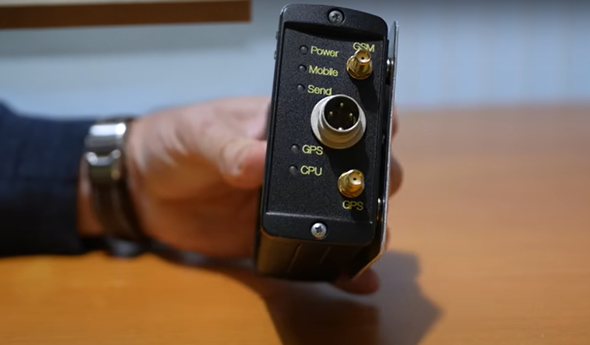

Your invisible record keeper
A compact flight data recorder hidden out-of-sight. It detects every flight by itself, records the times that matter, and uploads them the moment the engine stops. Effortless, accurate, invisible.
- Installed by a licensed engineer on a quick-release mounting plate
- A minor installation, approved for UK, EU and US-registered fixed- and rotary-wing aircraft
- Times accurate to ±10 seconds, uploaded after every flight

Fit it, forget it
Once installed, the AutoLog needs no pilot input at all. The only connection to your aircraft is a power supply.
Installation
Mounted on a quick-release plate out of sight (most commonly in the empennage, behind the rear baggage compartment) and fitted by a licensed engineer.
Flight detection
Take-off and landing are detected automatically: by speed thresholds on fixed-wing aircraft, and by a patent-pending weight-off-the-skids method on rotary-wing. Flight, block and engine times are captured without anyone pressing a button.
Data upload
After shutdown, the record uploads over the worldwide-supported 4G network: registration, flight ID, date, brakes-off/on times and location.
Integration
Times flow straight into the CloudBaseGA platform: tech logs, invoices and maintenance hours. An API is available for your own systems.
Compact, robust and out of the way
The AutoLog was designed for the realities of general aviation: it mounts out of sight (most commonly in the empennage, behind the rear baggage compartment, depending on the aircraft), weighs less than 300 g, and carries on working flight after flight without attention.
- Quick-release mounting plate for easy removal at maintenance
- Dedicated 4G and GPS antennas that don't interfere with aircraft systems
- Status LEDs for power, mobile signal, GPS fix and data send
- Powered from the aircraft supply; no other connections needed

A straightforward, approved installation
The AutoLog is a self-contained unit whose only aircraft connection is a power supply. With no appreciable effect on the aircraft's structure, weight or systems, it stays within the “minor” category wherever it's fitted. Since the UK left the EASA system in 2021, UK- and EU-registered aircraft follow separate routes, but both, like the US, are straightforward:
- UK CAA (G-registered): the UK Civil Aviation Authority is the regulator. The AutoLog is fitted as a minor modification, which your engineer installs and certifies
- EASA (EU-registered): installs as an aircraft tracking system under CS-STAN Standard Change CS-SC061a, a standard change for ELA2 aircraft with no EASA Form 1 required for the equipment
- FAA (N-registered): typically a minor alteration under 14 CFR Part 43: installed by an A&P mechanic using acceptable data (AC 43.13-1B/2B) and recorded with a simple logbook entry; no Form 337, STC or field approval normally needed
- LAA permit & US experimental aircraft: owners can often fit the AutoLog themselves, with post-installation sign-off by your LAA inspector on a UK permit-to-fly aircraft, or under the aircraft's operating limitations on a US experimental
- In each case the work is signed off by the appropriate person (a licensed engineer, A&P or inspector), who confirms the classification for your particular aircraft and register
- Installation guidance document (PDF) available for your maintenance organisation
Count only the hours that count
For maintenance records, the FAA defines time in service as “the time from the moment an aircraft leaves the surface of the earth until it touches it at the next point of landing” (14 CFR 1.1). A tachometer doesn't know that: it runs during run-up and taxi, so every minute on the ground counts against your engine and airframe, bringing the next check and the next overhaul closer than they need to be.
| How the hours are counted | Counts only airborne time? | Writes the records for you? |
|---|---|---|
| Tachometer | No. Runs on the ground with the engine, over-counting time in service | No. Transcribed by hand |
| Hobbs / hour meter | No. Typically counts from master or oil pressure, including taxi and run-up | No. Transcribed by hand |
| Stopwatch | Yes, if started at lift-off, but easy to forget to start or stop | No. Noted and transcribed by hand |
| Moving map / GPS app | Yes, from the GPS track | No. Times are read off and transcribed by hand, inviting errors |
| Airspeed or weight-on-wheels switches, connected engine-data loggers | Yes. The airborne-hours problem is solved | No. Tech log, billing and pilot logbooks still need manual transcribing |
| AutoLog + CloudBaseGA | Yes. Airborne and block times, accurate to ±10 s | Yes. Tech log, flight records, billing and maintenance hours fill in automatically |
Counting tacho time as time in service doesn't just cost accuracy; it costs real flying hours between checks. And solving the measurement alone still leaves the paperwork: the AutoLog is the only part of the chain that does both.
The details your engineer will ask for
| What it records | Aircraft registration, flight ID, date, brakes-off and brakes-on times, take-off and landing times, engine time, shutdown location |
|---|---|
| Accuracy | ±10 seconds on recorded times |
| Flight detection | Automatic, with no pilot interaction: speed thresholds on fixed-wing aircraft; a patent-pending weight-off-the-skids detection method on rotary-wing |
| Data upload | 4G cellular network with worldwide support, automatically after each engine shutdown |
| No-signal handling | If no server acknowledgement is received, records are stored and uploaded automatically on the next flight or power-up. No data is lost if you land somewhere without 4G cell reception |
| Mounting | Quick-release plate, out of sight. Location depends on the aircraft, most commonly in the empennage behind the rear baggage compartment |
| Aircraft connections | Power supply only |
| Weight | Under 300 g including mount |
| Approval basis (UK) | Minor modification under UK CAA rules, installed and certified by your engineer (the UK regulates its own aircraft since leaving EASA in 2021) |
| Approval basis (EASA) | CS-STAN Standard Change CS-SC061a (aircraft tracking system) for EU-registered ELA2 aircraft; no EASA Form 1 required |
| Approval basis (FAA) | Typically a minor alteration under 14 CFR Part 43, installed per AC 43.13-1B/2B and returned to service with an A&P logbook entry; no Form 337 or STC normally required (your installer confirms the classification) |
| Installation | Licensed engineer, following the installation guidance document |
| Integration | CloudBaseGA Online Platform; REST API available for third-party systems |
Details are provided for guidance; your installer should refer to the current installation guidance document.
Quietly dependable
*Local cell coverage and transient network issues account for the majority of the 0.14% of late flights.
CloudBaseGA is a small data logger which silently records when you start up the aircraft. For a private owner, like me, it removes the headache of having to manually record my flights and eliminates errors.
Takes care of everything and precisely records flying hours through the data logger installed on the aircraft. Makes invoicing and maintenance scheduling much easier.
Ready to streamline your flight logs?
Tell us about your aircraft and we'll come back with everything you need: equipment, installation and costs.